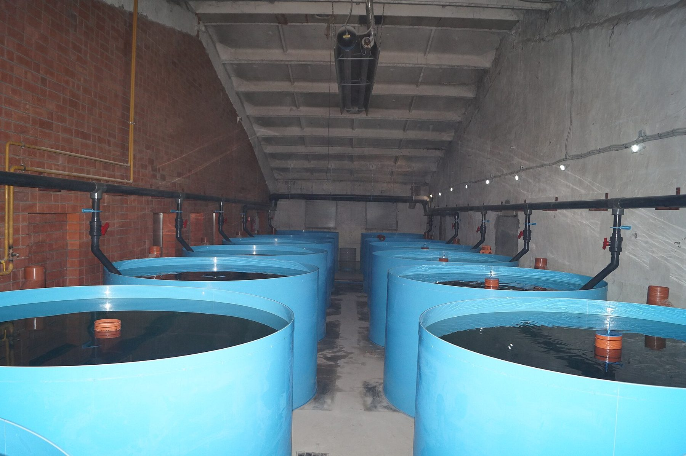
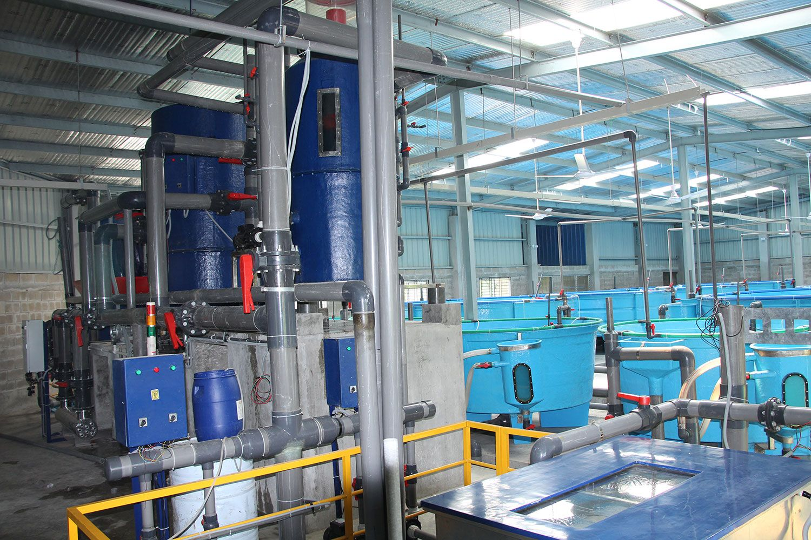

نظم الاستزراع المائي الدائري، ويُشار إليها عادةً بالاختصار RAS، تعالج مياه التربية ثم تعيدها إلى الأسماك. الفكرة سهلة في صياغتها، وصعبة في ممارستها. فبدل أن تغادر المياه المستخدمة المزرعة بعد مرور واحد، يزيل المشغّل المواد الصلبة، ويحوّل الفضلات الذائبة، ويعيد الأكسجين، ثم يردّ إلى الحوض جسم ماء مستقر. وتظهر أهمية هذه الطريقة أكثر ما تظهر حيث يشحّ الماء، أو حيث تُقيَّد مياه الصرف تقييدًا شديدًا، أو حيث تحتاج المزرعة إلى بيئة أكثر قابلية للتنبؤ مما يتيحه حوض مفتوح.
تشرح هذه المقالة ما هو النظام الدائري، ولماذا تناقشه المناطق الشحيحة الماء، وما الذي ينبغي أن يتوقعه الزائر. وهي مكتوبة للمشترين ومديري المزارع والجهات العامة الذين يريدون مقدمة واضحة قبل زيارة ورشة عرض. وهي ليست كتالوج مبيعات لمصانع جاهزة، ولا تعامل أي ورشة بعينها على أنها نموذج يمكن نسخه بلا تغيير إلى مناخ آخر.
ماذا يعني «الدائري» فعلًا
في مزرعة مفتوحة أو ذات مرور واحد (flow-through)، يدخل الماء، ويمرّ على الأسماك، ثم يغادر. ويُطلب ماء عذب باستمرار، وكل ما أضافته الأسماك إلى الماء — من علف غير مأكول وبراز وأمونيا ذائبة — يخرج مع الصرف، ما لم يُضَف حوض معالجة منفصل في المصب. أما في النظام الدائري فإن الحجم نفسه من الماء يُستخدم مرات كثيرة. ويُضاف قدر صغير نسبيًا من الماء الجديد لتعويض التبخر والرذاذ والغسيل العكسي للمرشحات، ولإخراج الحمأة إخراجًا مقصودًا. ويُعالَج الباقي ويُعاد استخدامه.
كثيرًا ما يصف المهندسون نظام RAS بأنه حلقة. يغادر الماء حوض التربية، ويمرّ بمرشّح للمواد الصلبة، ثم يدخل مرشّحًا بيولوجيًا تحوّل فيه المجتمعات الميكروبية الأمونيا إلى نيتريت ثم إلى نترات، ويُنزَع منه ثاني أكسيد الكربون الزائد، ويُؤكسَج، ثم يعود. وقد يقع التسخين أو التبريد على الحلقة نفسها. ويُضاف أحيانًا علاج بالأشعة فوق البنفسجية أو بالأوزون للسيطرة الميكروبية. ويختلف ترتيب الوحدات، أما المنطق فلا يختلف: يجب إخراج الفضلات أو تحويلها، ويجب إعادة توازن الغازات، ويجب أن تتلقى الأسماك ماءً يمكنها أن تعيش فيه.
وتُستخدم كلمة «مغلق» أحيانًا على نحو فضفاض. فلا يكاد يوجد نظام RAS تجاري أو عرضي مغلقًا تمامًا. فما يزال المشغّلون يطرحون تيار فضلات مركّزًا، ويضيفون القلوية أو مواد كيميائية أخرى، ويستبدلون جزءًا من الماء. والذي يميّز RAS هو معدل إعادة الاستخدام المرتفع، وخطوات المعالجة المقصودة التي تجعل إعادة الاستخدام ممكنة. فنظام يعيد استخدام تسعين في المئة أو أكثر من تدفّقه اليومي هو مزرعة مختلفة أصلًا عن مزرعة تعتمد على سحب متواصل من نهر.
وأحواض الزينة المنزلية تستخدم المبدأ نفسه على مقياس أصغر بكثير. فمرشّح صندوقي أو إسفنجة وزجاجة من البكتيريا المنترتة هي مرشّح بيولوجي مصغّر. أما توسيع هذه الفكرة إلى أسماك الطعام أو إلى ورشة بحث فليس مسألة شراء حوض أكبر. فحمولة العلف، والطلب على الأكسجين، وحجم المواد الصلبة، وعواقب تعطّل مضخة، كلها تزداد. وورشة العرض مفيدة تحديدًا لأنها تُظهر تلك العواقب في غرفة حقيقية، لا على مخطط فحسب.
الأجزاء الرئيسة للحلقة
حوض التربية هو المكان الذي تعيش فيه الأسماك. وقد تكون الأحواض دائرية، أو على شكل مجرى (raceway)، أو مستطيلة. والأحواض الدائرية شائعة لأنها تشجّع تيارًا ذاتي التنظيف حين يُوضع المدخل والمخرج وضعًا حسنًا. وينبغي النظر معًا إلى حجم الماء وكثافة التخزين وسلوك السباحة. فحوض يسهل تنظيفه لكنه سيئ الخلط سيترك مناطق ميتة تستقر فيها المواد الصلبة وينخفض فيها الأكسجين.
وإزالة المواد الصلبة هي خطوة المعالجة الأولى في معظم التصاميم. فإذا بقيت الحبيبات غير المأكولة والبراز في الماء ذابت، واستهلكت الأكسجين، وحمّلت المرشّح البيولوجي تحميلًا غير متساوٍ. ومن الأجهزة المستخدمة المرشحات الأسطوانية، وأقماع الترسيب، والفواصل الدوامية، وأحواض الترسيب الدوامي. وليس المقصود الأناقة. المقصود إخراج المواد الصلبة وهي ما تزال جسيمات، والقيام بذلك من دون طحنها إلى شظايا دقيقة يصعب التقاطها.
والمرشّح البيولوجي هو القلب الحي للنظام. تؤكسد البكتيريا ذاتية التغذية الأمونيا إلى نيتريت، ثم النيتريت إلى نترات. ولا بد من إقامة ذلك المجتمع — وكثيرًا ما يستغرق أسابيع — ثم الإبقاء عليه حيًا. وهو يحتاج إلى مساحة سطح، وأكسجين، ودرجة حرارة مستقرة بقدر معقول، وإمداد من الأمونيا لا يكون صفرًا ولا يطغى فجأة. فإذا صُدم المرشّح بزيادة مفاجئة في التغذية، أو جُوّع بفترة طويلة بلا أسماك، تأخّرت قدرته عن مواكبة الحمولة. وينبغي لزوّار الورشة أن يسألوا كيف بُدئ المرشّح وكيف يراقبه العاملون، لا أي علامة تجارية للوسط المستعمل فحسب.
ويُكمل الأكسجة وتبادل الغازات الحلقة. فالسمك والبكتيريا كلاهما يستهلك الأكسجين الذائب. ويتراكم ثاني أكسيد الكربون وقد يخفض الرقم الهيدروجيني. وفي بعض التصاميم يكفي عمود Packed، أو مؤكسج منخفض الرأس، أو تهوية بسيطة. وفي غيرها يُستخدم أكسجين نقي. ونزع الغازات والأكسجة مرتبطان لكنهما ليسا أمرًا واحدًا. فقد يكون النظام مؤكسجًا جيدًا وما يزال يحتفظ بثاني أكسيد الكربون أكثر مما ينبغي إذا لم يُسمح للماء بتبادل الغاز مع الهواء.
وتقع المراقبة إلى جانب العتاد. والأمونيا والنيتريت والنترات والأكسجين الذائب ودرجة الحرارة والرقم الهيدروجيني والقلوية، وأحيانًا ثاني أكسيد الكربون أو الملوحة، هي القراءات اليومية أو المتصلة المعتادة. ويمكن لمنصة إدارة مطوَّرة ذاتيًا، من النوع الذي وصفته ورشة نانشا، أن تجمع تلك القراءات وسجلات الإنتاج والتنبيهات في سجل واحد. والمنصة لا تحل محل تقني كفء. لكنها تجعل عمل التقني أيسر للمراجعة، وتجعل الانحراف المفاجئ أصعب أن يُفوَّت.

لماذا تنظر المناطق الشحيحة الماء إلى RAS
الماء هو السبب الأظهر. ففي مناخ جاف أو شبه جاف، ستتنافس مزرعة تحتاج إلى سحب أحجام كبيرة من الماء العذب كل يوم مع المدن والري والصناعة. ويمكن للحلقة الدائرية أن تنتج سمكًا بجزء صغير من الماء الذي يتطلبه نظام مرور واحد أو حوض كثير التسرب. وليس ذلك رخصة لتجاهل الصرف المتبقي، لكنه يغيّر حساب اختيار موقع مزرعة في الداخل، بعيدًا عن نهر كبير أو عن الساحل.
والسبب الثاني هو الضبط. ففي منطقة شديدة الحرّ صيفًا، أو ذات هواء مغبرّ وعواصف مفاجئة، يتعرّض الحوض الخارجي لكل تغيّر في الطقس. أما نظام RAS داخلي أو داخل بيت بلاستيكي فيستطيع أن يحفظ درجة الحرارة في نطاق أضيق، ويحدّ من دخول الطيور والحشرات، ويقلّل احتمال أن يفرّغ فيضان أو جفاف الماء أو يلوّثه. والأمن الحيوي لا يكون كاملًا أبدًا — فما يزال العاملون والعلف والمخزون الداخل مسارات دخول — غير أن سقفًا ومدخلًا مضبوطًا هما نقطة انطلاق مختلفة عن سدّ مفتوح.
والسبب الثالث هو القرب من الأسواق. تريد بعض الحكومات والمستثمرين أن تُربَّى الأسماك قرب المدن التي ستأكلها، لا أن تُستورَد عبر مسافات طويلة. ويمكن لورشة استزراع دائري برية، من حيث المبدأ، أن تقع على حافة منطقة حضرية إذا أمكن تدبير الطاقة والأرض وتراخيص الصرف. وهذا حجّة كثيرًا ما تُسمع في الخليج، وتُسمع أيضًا في أجزاء مكتظة من آسيا. وهي حجّة عن الإمداد اللوجستي والأمن الغذائي، لا عن التقنية وحدها.
ويقدّم تقرير منظمة الأغذية والزراعة SOFIA 2026، الصادر في 16 حزيران/يونيو 2026، خلفية عالمية متحفّظة لهذه الحوارات. فقد أفاد أن إنتاج الحيوانات المائية المستزرعة بلغ 103 ملايين طن في عام 2024، عابرًا 100 مليون طن للمرة الأولى، في حين بقي الصيد الطبيعي حول 92 مليون طن. وقُدّرت تجارة الحيوانات المائية بـ184 مليار دولار. وتصف هذه الأرقام شهية العالم للسمك المستزرع. وهي، بذاتها، لا تخبر المشتري أي نظام يبني، ولا على أي مقياس. لكنها تبيّن لماذا تجتذب الطرق البرية الموفّرة للماء الاهتمام بعد أن استقر إنتاج الصيد الطبيعي منذ زمن طويل. ويُنشر بيان منظمة الأغذية والزراعة علنًا، وينبغي أن يُقرأ بألفاظه لا شعارًا تسويقيًا.
ولبلدان الخليج أسباب خاصة للنظر عن كثب. فالماء العذب شحيح. والأمن الغذائي شأن سياسات معلن. وقد نُشر أصلًا أن عددًا من شركات المعدات الصينية والدولية تتلقّى طلبات في المنطقة لنظم برية. وذلك النشاط المنشور إشارة طلب. وهو ليس دليلًا على أن شركة بعينها، بما في ذلك مشغّلة ورشة نانشا، قد سلّمت منشأة هناك أصلًا. وسيفصل المشتري الجاد بين هاتين الحقيقتين.
أما أسواق جنوب شرق آسيا دافئة الماء فلها نقطة انطلاق مختلفة. وكثير منها يستزرع أصلًا البلطي أو الربيان أو الهامور أو أنواعًا دافئة أخرى في أحواض. وقد يكون الماء أوفر مما في الخليج، غير أن الأمراض وتنظيم مياه الصرف وأسعار الأرض ما تزال تدفع بعض المشغّلين نحو إعادة استخدام أعلى ومراحل داخلية أكثر كثافة. ويمكن لحضانة دائرية أو ورشة لأمهات التربية أن تقع إلى جانب الأحواض لا أن تحل محلها. وذلك الجمع قريب مما يُسمّى غالبًا الاستزراع بالتناوب مع الأحواض، وهو من الممارسات المرتبطة علنًا بشركة نانشا.
ما الذي لا يحلّه RAS تلقائيًا
الطاقة هي الحدّ الأول. فالمضخات والمرشحات الأسطوانية والنوافخ، وفي مناخات كثيرة المدافئ أو المبرّدات، تعمل ما دامت الأسماك في الأحواض. ونظام يوفّر الماء قد ينفق قدرًا كبيرًا من الكهرباء. وقبل أي استثمار، ينبغي أن يطلب المشتري نقاشًا صريحًا عن الكيلوواط-ساعة لكل كيلوغرام من السمك، وعن مخاطر التعرفة، وعما يحدث عند انقطاع الكهرباء. وليست مولّدات الاحتياط ونظم التنبيه زينة اختيارية. إنها جزء من المزرعة.
والمهارة هي الحدّ الثاني. فالمرشّح البيولوجي عملية حيّة. وينبغي للعاملين أن يفهموا منحنيات الأمونيا، لا كيفية الضغط على زر التشغيل فحسب. وينبغي أن يعرفوا متى يخفضون العلف، ومتى يضيفون الكربونات، ومتى تكون ذروة النيتريت تحذيرًا لا قراءة روتينية. وورشة العرض ذات قيمة لأنها تُظهر العمل اليومي، لا لأنها تخفيه وراء واجهة نظيفة.
وتكلفة رأس المال هي الحدّ الثالث. فالأحواض والترشيح والأكسجة والمباني والمراقبة أغلى مقارنةً بحوض ترابي بسيط. وتختلف التقديرات التجارية المنشورة لأسواق معدات RAS في تعريفاتها، وينبغي ألا تُخاط في منحنى نمو واحد. وما يمكن أن يعتمد عليه المشتري أكثر أساسية: فورشة الاستزراع الدائري مشروع رأسمالي، وستفشل اقتصاديًا إذا لم تُراقَب الطاقة وتحويل العلف والبقاء وسعر السوق بالعناية نفسها التي تُولى لكيمياء الماء.
والصرف لا يختفي. فما تزال المواد الصلبة ومياه صرف مركّزة بحاجة إلى مكان تذهب إليه. ويتضمن التصميم المسؤول معالجة الحمأة، وحيث يقتضي التنظيم ذلك، خطوة لمعالجة مياه الصرف. وفي نانشا نشرت الشركة، بوصفها صاحبة المشروع، مناقصة لمنشأة إعادة تدوير لمياه صرف الاستزراع يُقصد بها معالجة 100 طن من مياه الصرف و950 كيلوغرامًا من المواد الصلبة يوميًا، مع تحويل المواد الصلبة إلى سماد. وتصف تلك المناقصة منشأة حديقة قيد الإنشاء. وهي مفيدة مثالًا على المسألة، لا دليلًا على أن وحدة معالجة مغلفة تُباع أصلًا في الخارج.

الحجم والأمانة وما يمكن لورشة العرض أن تبيّنه
والحجم هو الموضع الذي تخطئ فيه لغة التسويق أكثر ما تخطئ. فرقم استثمار الحديقة، ومساحة المباني، وحجم التربية التجريبي ثلاثة أرقام مختلفة. لوادي الزراعة في منطقة الخليج في نانشا استثمار إجمالي منشور يبلغ نحو 853 مليون رنمينبي، ومساحة تخطيط للأرض تبلغ نحو 34,104 أمتار مربعة. ويصف اعتماد التقييم البيئي الصادر في 2 شباط/فبراير 2026 حجم تربية تجريبي سنوي مصمَّم يبلغ نحو 50 طنًا. ولا تجتمع هذه الحقائق معًا إلا إذا لم يقرأ القارئ استثمار الحديقة على أنه طاقة مصنع تجاري كبير. ويُبقي هذا الموقع بينها فصلًا مقصودًا.
وورشة عرض على مقياس تجريبي يمكن أن تظل مكانًا جادًا للتعلّم. فيستطيع الزوّار أن يشاهدوا كيف يُشغَّل نظام النترجة، وكيف تُسجَّل قراءات جودة المياه، وكيف يستجيب العاملون حين ينحرف مؤشر، وكيف ترتبط أحواض الاستزراع السمكي النباتي بمياه تربية الأسماك. ويستطيعون مناقشة ممارسة التناوب مع الأحواض في بيئتها المحلية. ولا يمكنهم، من تصميم تجريبي بطاقة 50 طنًا، أن يستنتجوا أداء مصنع سلمون بطاقة 8,000 طن من النوع الذي يبنيه مقاولون دوليون متخصصون. فتلك طبقات مختلفة من المشاريع.
إذن، العرض الأمين ليس «سنبني لكم مصنعًا جاهزًا بأي حجم». بل هو «تعالوا فانظروا كيف تُشغَّل ممارسة الاستزراع الدائري في نانشا، وتحدّثوا عن منصة الإدارة وأجهزة تشيوهاو، ثم قرّروا إن كانت تلك الممارسة ذات صلة بمائكم وأنواعكم وعامليكم». ومشترو الخليج وجنوب شرق آسيا الذين هم في مرحلة الاهتمام الأولى هم على وجه التحديد القرّاء الذين قُصد هذا العرض من أجلهم. والاهتمام ليس مشروعًا مكتملًا، وهذه المقالة لا تدّعي وجود واحد.
أسئلة تستحق أن تُطرح قبل الزيارة
تبدأ الزيارة المفيدة بأسئلة يمكن الإجابة عنها على أرض الورشة. كيف يُدخل الماء الجديد، وكيف يُقاس الصرف؟ كم استغرق نضج المرشّح البيولوجي؟ ماذا يحدث عند انقطاع الكهرباء؟ أي المؤشرات تُسجَّل تلقائيًا، وأيها ما يزال يُفحص يدويًا؟ كيف تُعزَل الأسماك المريضة؟ كيف تُخزَّن الحمأة أو تُرسل لمعالجة لاحقة؟ إذا كانت النباتات جزءًا من الحلقة، فكيف يرتبط حصادها بحمولة النيتروجين من الأسماك؟
وينبغي للزائر أيضًا أن يسأل عما ليست الورشة عليه. فهي، وفق السجل العلني، ليست منشأة تصدير معتمدة تحمل علامات CE أصلًا. وليست مصنع سلمون تجاريًا كبيرًا. وليست بديلًا عن تصميم خاص بالموقع في مناخ خليجي أو جنوب شرق آسيوي، حيث ستختلف درجة الحرارة والملوحة وإمداد العلف والعمل عن نانشا. وهذه الحدود، إن قيلت بوضوح، تجعل الزيارة أكثر نفعًا لا أقل.
وأسئلة الأنواع تنتمي إلى الحوار نفسه. فالأنواع دافئة الماء مثل البلطي وبعض الهامور وسمك الماندرين (Siniperca، 鳜鱼) أقرب إلى سياق البحث والتربية في ورشة جنوب صينية مما يكون السلمون الأطلسي. وسمك الماندرين، على وجه الخصوص، يظهر في مناقصة بحثية لعام 2024 من شركة نانشا، بسقف منشور قدره 500,000 رنمينبي، طلبًا لدعم خارجي في أقلمة اليرقات المبكرة وأمهات التربية في نظم RAS. وذلك تخطيط بحثي، لا منتج تجاري مضمون للتصدير.
نظرة ختامية
الاستزراع المائي الدائري طريقة لمعالجة مياه التربية وإعادة استخدامها حتى يمكن تربية الأسماك بكمية سحب أقل وبضبط أكبر مما يتيحه نظام مرور واحد بسيط. وللمناطق الشحيحة الماء أسباب وجيهة لدراسته: الماء نفسه، والضبط المناخي، والأمن الحيوي، والرغبة في زراعة الغذاء قرب من سيأكلونه. وهذه الأسباب لا تزيل تكاليف الطاقة والمهارة ورأس المال، ولا تزيل الحاجة إلى معالجة الفضلات المتبقية.
وما يزال أوثق سبيل لفهم الطريقة أن تمشي في حلقة عاملة، وأن تقرأ الأرقام اليومية، وأن تتحدث إلى من يشغّلون المضخات في الصباح. وذلك هو غرض ورشة يمكن زيارتها في نانشا، وهو غرض هذه المقالة: أن تقدّم بيانًا أولًا متحفّظًا عما هو RAS، حتى يكون حديث لاحق على أرض الورشة أكثر دقة.
ومن أراد من القرّاء المضيّ أبعد فلينظر تاليًا في ملاحظاتنا عن جودة المياه في الممارسة اليومية لنظم RAS، أو في الأسئلة التي قد يحملها مشترٍ من الخليج أو جنوب شرق آسيا في زيارة أولى. وستُنشر بيانات الاتصال الرسمية لترتيب زيارة حين تُؤكَّد.
المصدر المذكور: منظمة الأغذية والزراعة للأمم المتحدة، بيان SOFIA 2026، 16 حزيران/يونيو 2026، fao.org.